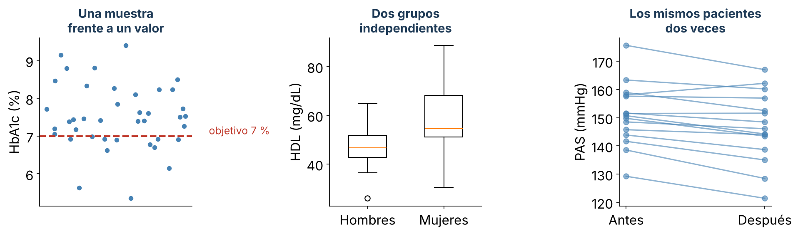
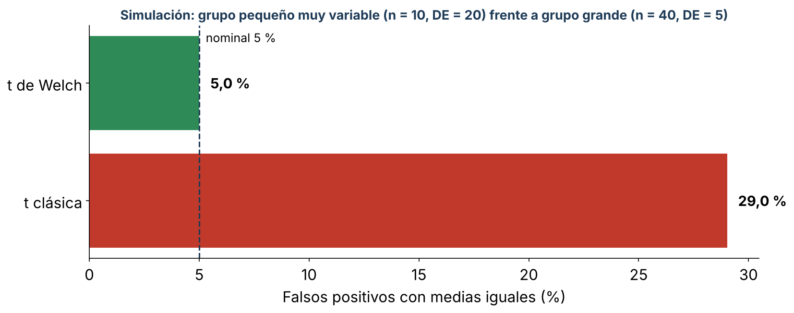
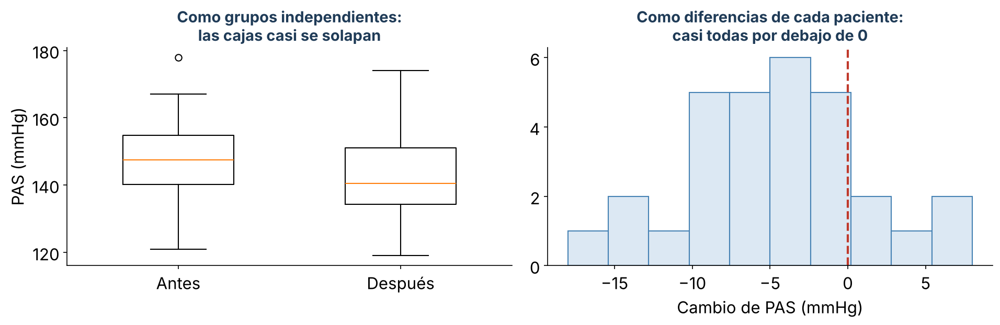
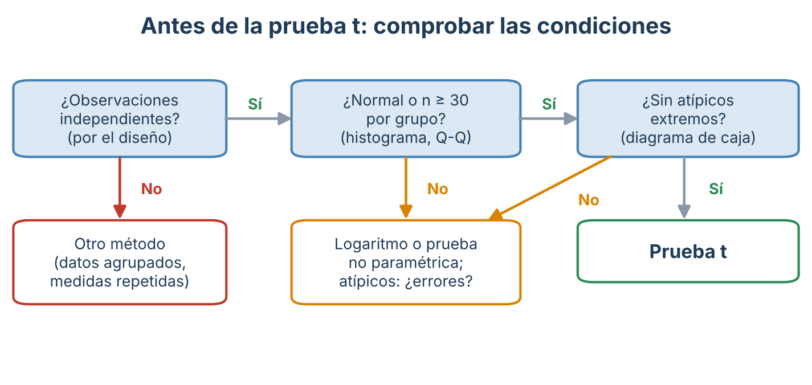
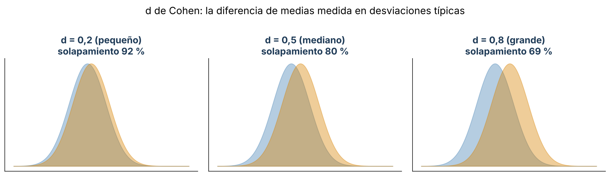

Bioestadística (1964) · Grado en Medicina · Curso 2027-2028
Tema 250Inferencia sobre medias: pruebas t para muestras independientes y relacionadas
Módulo 5. Generalización de conclusiones
Evaluación: el examen del Módulo 5 se hace con Colab. Practica ejecutando e interpretando cada análisis.
Fernando Borrás Rocher · Universidad Miguel Hernández de Elche · CC BY 4.0
Objetivos de aprendizaje
Al terminar esta sesión serás capaz de:
- Elegir entre la prueba t para una muestra, para dos muestras independientes y para muestras relacionadas.
- Aplicar la prueba t de Welch y saber por qué es la opción recomendada para dos grupos independientes.
- Estimar la diferencia de medias con su intervalo de confianza y el tamaño del efecto (d de Cohen).
- Comprobar las condiciones de aplicación de forma gráfica y razonada.
- Reconocer cuándo conviene una alternativa no paramétrica.
Cómo usar esta presentación
Usa el selector de arriba para dar el tema en una sesión completa o en dos sesiones intercaladas.
🎓 Sesión de clase magistral
- 1. Caso clínico de partida 5 min
- 2. Conceptos clave 10 min
- 5. Autoevaluación 5 min
Explica los conceptos, haz la pausa activa y cierra con las ideas clave.
💻 Sesión de Colab
- 3. Demostración: las tres pruebas t 20 min
- 4. Práctica en la app Bioestadística 10 min
- 5. Autoevaluación 5 min
Cada estudiante abre su copia del cuaderno, predice el resultado y después ejecuta la celda.
Teclas: ← → para pasar · N notas del profesor · M cambiar de modo · F pantalla completa · Esc índice.
1. Caso clínico de partida
HDL en hombres y mujeres de la cohorte
- Dos grupos distintos de pacientes: prueba t de Welch.
- Se comunica la diferencia de medias con su IC, el valor p y el tamaño del efecto.
2. Conceptos clave
2.1 Las tres pruebas t
Tres pruebas t para tres diseños

- Una media frente a un valor de referencia · dos grupos independientes · los mismos pacientes dos veces.
- El diseño, no los datos, decide la prueba.
2. Conceptos clave
2.2 Welch o Student clásica

La prueba t clásica para dos muestras supone que las varianzas son iguales en los dos grupos. La versión de Welch no lo supone y ajusta los grados de libertad. Cuando las varianzas son iguales, las dos dan casi lo mismo; cuando no lo son, la clásica puede equivocarse. Por eso se recomienda usar Welch por defecto, sin contrastar antes la igualdad de varianzas.
2. Conceptos clave
2.3 Muestras relacionadas
Antes y después en los mismos pacientes

- La variabilidad entre pacientes es mucho mayor que la del cambio dentro de cada paciente.
- La prueba apareada analiza las diferencias: elimina esa variabilidad y gana potencia.
2. Conceptos clave
2.4 Condiciones de aplicación

| Condición | Cómo valorarla | Si no se cumple |
|---|---|---|
| Observaciones independientes (dentro de cada grupo) | Por el diseño | Otro método (datos agrupados, medidas repetidas) |
| Normalidad de la variable (o de las diferencias) | Histograma y gráfico Q-Q; con n ≥ 30 por grupo la prueba es robusta por el teorema central del límite | Transformación (logaritmo) o prueba no paramétrica |
| Ausencia de atípicos extremos | Diagrama de caja | Revisar si son errores (Tema 100); prueba no paramétrica |
Los contrastes formales de normalidad (Shapiro-Wilk) tienen poco valor: con muestras pequeñas casi nunca detectan nada, y con muestras grandes detectan desviaciones irrelevantes.
2. Conceptos clave
2.5 Tamaño del efecto: d de Cohen

$$d = \frac{\bar{x}_1 - \bar{x}_2}{s_{\text{conjunta}}}$$
Expresa la diferencia en unidades de desviación típica. Orientación habitual: 0,2 pequeño, 0,5 mediano, 0,8 grande. Para decidir la relevancia clínica, sin embargo, importa más la diferencia en las unidades originales (mg/dL, mmHg) comparada con la mínima diferencia clínicamente importante.
Pausa activa
Piensa 30 segundos, comenta con quien tienes al lado y vota.
Se mide la glucemia a 25 pacientes antes y después de un tratamiento. ¿Qué prueba usas?
En la sesión de Colab
Lo que acabas de ver se comprueba con datos en el cuaderno del Tema 250.
- Abre el cuaderno y guarda tu copia: Archivo → Guardar una copia en Drive.
- Ejecuta la celda de configuración.
- Ve a la demostración y predice cada resultado antes de ejecutar.
3. Demostración: las tres pruebas t
3.1 Dos muestras independientes: HDL por sexo
▶ En tu cuaderno: 3.1 Dos muestras independientes: HDL por sexo. Antes de ejecutar, escribe qué esperas obtener.
import numpy as np
import pandas as pd
from scipy import stats
import matplotlib.pyplot as plt
import seaborn as sns
cohorte = pd.read_csv("https://raw.githubusercontent.com/fborrasumh/bioestadistica/main/datos/cohorte_limpia.csv")
hdl = cohorte.dropna(subset=["hdl_mg_dl"])
hombres = hdl.loc[hdl["sexo"] == "Hombre", "hdl_mg_dl"]
mujeres = hdl.loc[hdl["sexo"] == "Mujer", "hdl_mg_dl"]
print(hdl.groupby("sexo")["hdl_mg_dl"].agg(["count", "mean", "std"]).round(1))
fig, ejes = plt.subplots(1, 2, figsize=(10, 4))
sns.boxplot(data=hdl, x="sexo", y="hdl_mg_dl", ax=ejes[0])
ejes[0].set_ylabel("HDL (mg/dL)")
for grupo, color in [(hombres, "steelblue"), (mujeres, "indianred")]:
stats.probplot(grupo, plot=ejes[1])
ejes[1].set_title("Gráfico Q-Q de los dos grupos")
plt.tight_layout()
plt.show()Los diagramas de caja muestran distribuciones razonablemente simétricas y los puntos del gráfico Q-Q siguen aproximadamente una recta. Con más de 170 pacientes por grupo, la prueba t es además robusta a desviaciones moderadas de la normalidad.
welch = stats.ttest_ind(mujeres, hombres, equal_var=False)
clasica = stats.ttest_ind(mujeres, hombres, equal_var=True)
ic = welch.confidence_interval()
n1, n2 = len(mujeres), len(hombres)
s_conjunta = np.sqrt(((n1 - 1) * mujeres.var() + (n2 - 1) * hombres.var()) / (n1 + n2 - 2))
d = (mujeres.mean() - hombres.mean()) / s_conjunta
print(f"Diferencia (mujeres − hombres): {mujeres.mean() - hombres.mean():.1f} mg/dL "
f"(IC 95 %: {ic.low:.1f} a {ic.high:.1f})")
print(f"Welch: t = {welch.statistic:.2f}, gl = {welch.df:.0f}, p = {welch.pvalue:.1e}")
print(f"Clásica: t = {clasica.statistic:.2f}, gl = {clasica.df:.0f}, p = {clasica.pvalue:.1e}")
print(f"d de Cohen = {d:.2f}")Cómo se comunica: «El HDL medio fue de 58,4 mg/dL (DE 12,5) en mujeres y de 48,8 mg/dL (DE 9,7) en hombres. Diferencia de 9,6 mg/dL (IC 95 %: 7,3 a 11,9; prueba t de Welch, p < 0,001; d = 0,86)».
Una diferencia de casi 10 mg/dL es grande y clínicamente relevante. Por eso las guías usan umbrales de HDL bajo distintos por sexo (< 40 mg/dL en hombres y < 50 mg/dL en mujeres).
3. Demostración: las tres pruebas t
3.2 Muestras relacionadas: el programa de reducción de sal
▶ En tu cuaderno: 3.2 Muestras relacionadas: el programa de reducción de sal. Antes de ejecutar, escribe qué esperas obtener.
rng = np.random.default_rng(seed=250)
antes = rng.normal(148, 14, 30).round()
despues = (antes - rng.normal(5, 6, 30)).round()
diferencias = despues - antes
apareada = stats.ttest_rel(despues, antes)
ic = apareada.confidence_interval()
print(f"PAS media antes: {antes.mean():.1f} · después: {despues.mean():.1f} mmHg")
print(f"Cambio medio: {diferencias.mean():.1f} mmHg (IC 95 %: {ic.low:.1f} a {ic.high:.1f})")
print(f"t apareada: t = {apareada.statistic:.2f}, gl = {apareada.df:.0f}, p = {apareada.pvalue:.1e}")
uno = stats.ttest_1samp(diferencias, 0)
print(f"t para una muestra sobre las diferencias: t = {uno.statistic:.2f}, p = {uno.pvalue:.1e} (idéntica)")fig, ejes = plt.subplots(1, 2, figsize=(10, 4))
for a, d_ in zip(antes, despues):
ejes[0].plot([0, 1], [a, d_], color="gray", alpha=0.5)
ejes[0].set_xticks([0, 1], ["Antes", "Después"])
ejes[0].set_ylabel("PAS (mmHg)")
ejes[0].set_title("Cada línea es un paciente")
ejes[1].hist(diferencias, bins=10, color="lightsteelblue", edgecolor="white")
ejes[1].axvline(0, color="black", linestyle="--")
ejes[1].set_xlabel("Cambio de PAS (mmHg)")
ejes[1].set_title("Distribución de las diferencias")
plt.tight_layout()
plt.show()3. Demostración: las tres pruebas t
3.3 El error de ignorar el apareamiento
▶ En tu cuaderno: 3.3 El error de ignorar el apareamiento. Antes de ejecutar, escribe qué esperas obtener.
indep = stats.ttest_ind(despues, antes, equal_var=False)
print(f"Como si fueran grupos independientes: p = {indep.pvalue:.3f}")
print(f"Prueba apareada (correcta): p = {apareada.pvalue:.1e}")
print(f"DE de la PAS entre pacientes: {antes.std(ddof=1):.1f} · DE de las diferencias: {diferencias.std(ddof=1):.1f} mmHg")La variabilidad entre pacientes (DE de unos 13 mmHg) es mucho mayor que la variabilidad del cambio dentro de cada paciente. La prueba apareada la elimina; la independiente la deja como ruido y no detecta el efecto.
Como en el Tema 240: sin grupo control no se puede atribuir la reducción al programa. Parte puede deberse a la regresión a la media, porque se eligieron pacientes con la PAS alta.
3. Demostración: las tres pruebas t
3.4 Una muestra: HbA1c de los diabéticos frente al objetivo
▶ En tu cuaderno: 3.4 Una muestra: HbA1c de los diabéticos frente al objetivo. Antes de ejecutar, escribe qué esperas obtener.
analiticas = pd.read_csv("https://raw.githubusercontent.com/fborrasumh/bioestadistica/main/datos/analiticas.csv")
datos = cohorte.merge(analiticas, on="id")
hba1c = datos.loc[datos["diabetes"] == "Sí", "hba1c_pct"].dropna()
r = stats.ttest_1samp(hba1c, popmean=7.0)
ic = r.confidence_interval()
print(f"Diabéticos con HbA1c: {len(hba1c)}")
print(f"HbA1c media: {hba1c.mean():.2f} % (IC 95 %: {ic.low:.2f} a {ic.high:.2f})")
print(f"Frente al objetivo del 7 %: t = {r.statistic:.2f}, p = {r.pvalue:.3f}")
print(f"Pacientes por encima del objetivo: {(hba1c > 7).mean():.0%}")La media está por encima del objetivo. Pero el dato clínicamente útil es también qué proporción de pacientes no lo alcanza. Una media cercana al objetivo puede esconder a muchos pacientes mal controlados.
Ampliación
Ampliación: cuando la normalidad falla
Con muestras pequeñas y variables muy asimétricas (como la creatinina o el NT-proBNP), hay dos opciones:
- Transformar la variable con el logaritmo y aplicar la t a los logaritmos. La diferencia de medias de los logaritmos, exponenciada, es un cociente de medias geométricas.
- Usar una prueba no paramétrica: Mann-Whitney para dos grupos independientes y Wilcoxon de los rangos con signo para datos apareados (Tema 260).
creatinina = datos.dropna(subset=["creatinina_mg_dl"])
diab = creatinina.loc[creatinina["diabetes"] == "Sí", "creatinina_mg_dl"]
no_diab = creatinina.loc[creatinina["diabetes"] == "No", "creatinina_mg_dl"]
r_log = stats.ttest_ind(np.log(diab), np.log(no_diab), equal_var=False)
ic = r_log.confidence_interval()
cociente = np.exp(np.log(diab).mean() - np.log(no_diab).mean())
print(f"Cociente de medias geométricas (diabéticos / no diabéticos): {cociente:.2f} "
f"(IC 95 %: {np.exp(ic.low):.2f} a {np.exp(ic.high):.2f}), p = {r_log.pvalue:.3f}")
print(f"Mann-Whitney: p = {stats.mannwhitneyu(diab, no_diab).pvalue:.3f}")Ampliación
Ampliación: errores frecuentes
Usar la t para muestras independientes con datos apareados.
Contrastar la igualdad de varianzas para elegir la prueba. Usa Welch directamente.
Exigir un Shapiro-Wilk no significativo con muestras grandes: la t es robusta.
Dar solo el valor p. Da las medias, la diferencia, su IC y el tamaño del efecto.
Hacer muchas pruebas t entre varios grupos en lugar de un análisis de la varianza (Tema 260).
Ampliación
Ampliación: Comparar las varianzas de dos grupos
La t clásica supone que los dos grupos tienen la misma varianza. Hay dos pruebas para comprobarlo:
- Prueba F: compara el cociente de las dos varianzas. Exige normalidad.
- Prueba de Levene: es más robusta si los datos no son normales.
En ambas, H₀ dice que las varianzas son iguales. Muchos autores recomiendan usar Welch siempre: funciona bien con varianzas iguales y con varianzas distintas. Así la decisión no depende de otra prueba previa.
En tus materiales SIMUSTAT: Tema 400. Contraste de dos medias poblacionales, apartado 2.
f = mujeres.var() / hombres.var()
gl1, gl2 = len(mujeres) - 1, len(hombres) - 1
p_f = 2 * min(stats.f.sf(f, gl1, gl2), stats.f.cdf(f, gl1, gl2))
lev = stats.levene(mujeres, hombres)
print(f"DE del HDL: mujeres {mujeres.std():.1f} | hombres {hombres.std():.1f} mg/dL")
print(f"Prueba F: F = {f:.2f}, p = {p_f:.3f}")
print(f"Levene: W = {lev.statistic:.2f}, p = {lev.pvalue:.3f}")Si las varianzas difieren, la t clásica puede dar un valor p erróneo. Welch, en cambio, sigue siendo válida. Usa la comparación de varianzas para describir los grupos, no para elegir la prueba.
4. Práctica en la app Bioestadística
Abre la unidad 250 de la app Bioestadística y completa sus misiones:
- Misión básica (sin asistente): elegir la prueba t adecuada para seis diseños y calcular a mano un estadístico t.
- Misión clínica (con pistas): comparar el IMC entre diabéticos y no diabéticos de la cohorte. Dar la diferencia, el IC 95 %, la d de Cohen y una frase de resultados.
- Misión reto (con asistente): pedir al asistente el análisis de un ensayo antes-después, detectar si ha usado la prueba equivocada y corregirla.
Al terminar, exporta el informe de la unidad.
5. Autoevaluación
Responde sin asistente.
5. Autoevaluación
Elige una opción: verás la explicación.
Se mide la glucemia a 25 pacientes antes y después de un tratamiento. ¿Qué prueba usas?
¿Por qué se recomienda la prueba t de Welch para dos grupos independientes?
Una diferencia de medias de PAS es de 4 mmHg (IC 95 %: −1 a 9). ¿Qué concluyes?
¿Qué expresa una d de Cohen de 0,8?
Con 12 pacientes por grupo y una variable muy asimétrica con atípicos, ¿qué es lo más adecuado?
Ideas clave
- t para una muestra, para dos independientes (Welch) o para relacionadas, según el diseño.
- La t apareada es la t para una muestra aplicada a las diferencias.
- Da siempre la diferencia de medias con su IC y el tamaño del efecto.
- Con n moderado la t es robusta; con n pequeño y asimetría, logaritmos o pruebas no paramétricas.
- Antes-después sin grupo control no demuestra causalidad.
Glosario
| Término | Definición |
|---|---|
| Prueba t para una muestra | Contraste de una media frente a un valor de referencia |
| Prueba t para dos muestras independientes | Contraste de la igualdad de las medias de dos grupos distintos |
| Prueba t de Welch | Versión de la t para dos muestras que no supone varianzas iguales |
| Prueba t para muestras relacionadas | Contraste de la media de las diferencias apareadas frente a 0 |
| Gráfico Q-Q | Gráfico que compara los cuantiles de los datos con los de una distribución normal |
| d de Cohen | Diferencia de medias dividida por la desviación típica conjunta |
| Media geométrica | Exponencial de la media de los logaritmos |
| Prueba de Mann-Whitney | Alternativa no paramétrica a la t para dos muestras independientes |
Para saber más
- Ruxton GD. The unequal variance t-test is an underused alternative to Student's t-test and the Mann-Whitney U test. Behav Ecol. 2006;17(4):688-690. doi:10.1093/beheco/ark016
- Bland JM, Altman DG. Transformations, means, and confidence intervals. BMJ. 1996;312(7038):1079. doi:10.1136/bmj.312.7038.1079
- SIMUSTAT Unidigital UMH. Tema 400. Contraste de dos medias poblacionales. Cuaderno de Google Colab. Elche: Universidad Miguel Hernández; 2023.